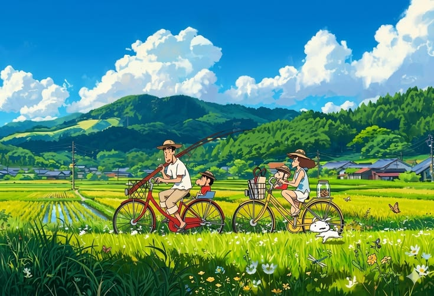
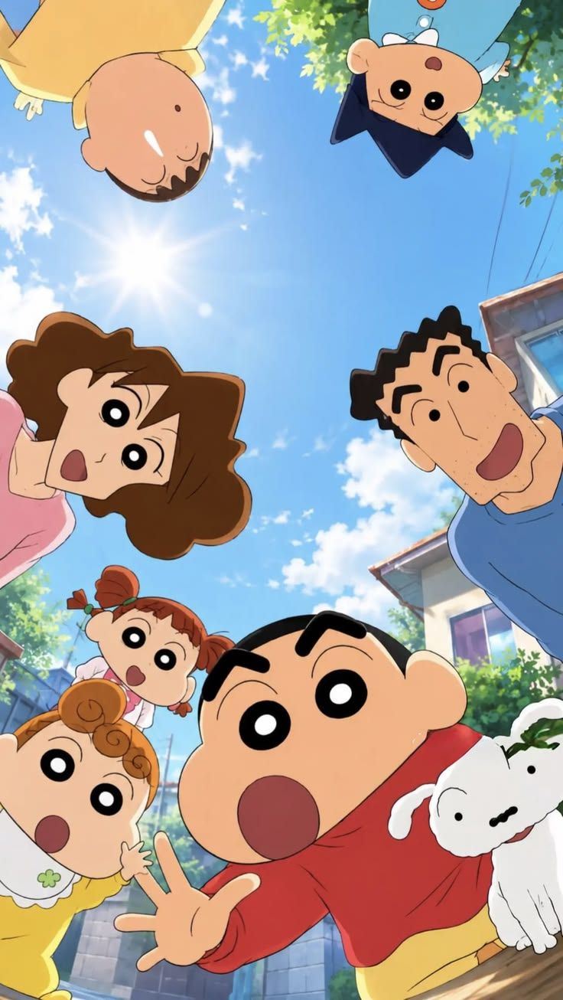

ABOUT CRAYON SHIN-CHAN
Learn about one of the most popular comedy anime series in Japan.

HOW IT STARTED
Crayon Shin-chan was created by Japanese manga artist Yoshito Usui in 1990. The manga became extremely popular because of its funny humor, realistic family life, and unforgettable characters. Soon after, the anime adaptation began airing and quickly became one of Japan's longest-running and most loved animated television series.

THE STORY
The story follows Shinnosuke "Shin-chan" Nohara, a mischievous five-year-old boy who lives in Kasukabe, Japan. He spends his days playing with his friends, going to kindergarten, teasing his parents, and getting into funny situations.
Shin-chan's family includes his caring mother Misae, hardworking father Hiroshi, his little sister Himawari, and their loyal dog Shiro. Together they create many unforgettable and heartwarming adventures that make audiences of all ages laugh.
WHY PEOPLE LOVE SHIN-CHAN
Crayon Shin-chan has entertained millions of viewers around the world for over 30 years. Its unique combination of comedy, friendship, family values, and everyday adventures has made it one of the most successful anime series ever created.
Although Shin-chan is known for his silly jokes and playful behavior, the series also teaches important lessons about kindness, family, friendship, and enjoying life's simple moments. These qualities are why fans of all ages continue to love the show today.